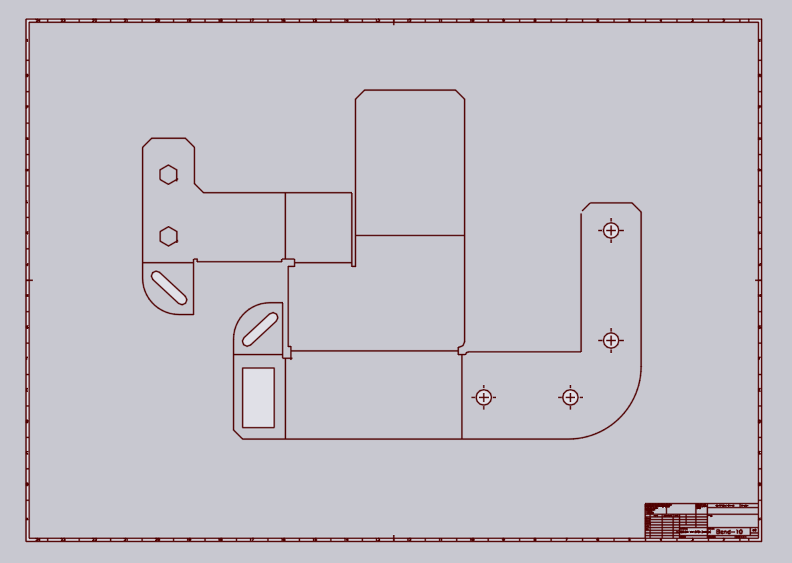
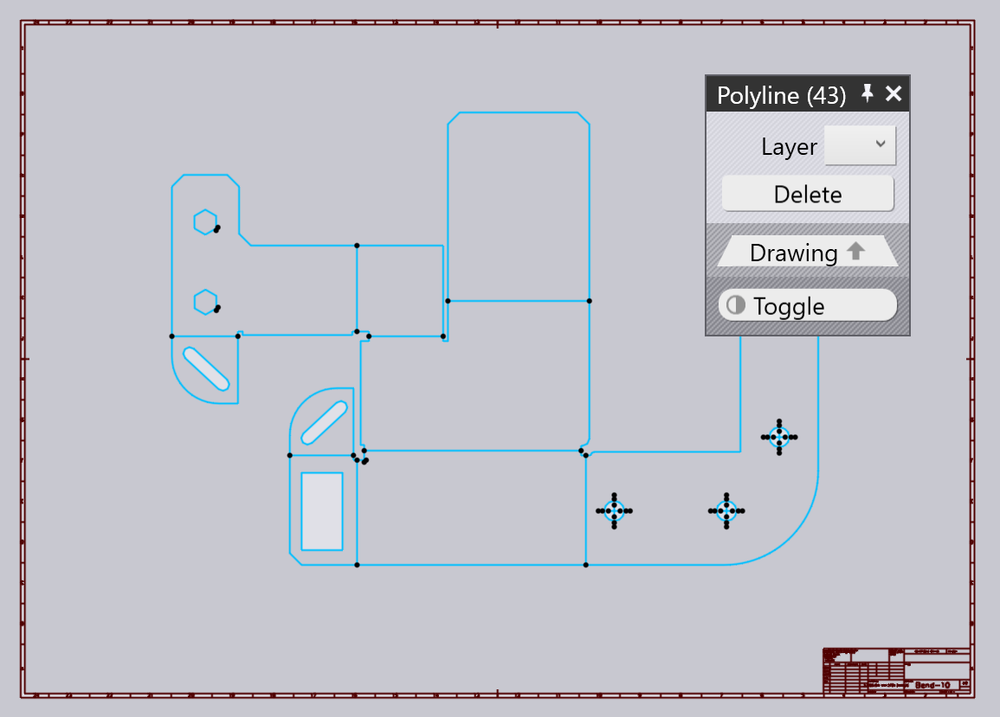
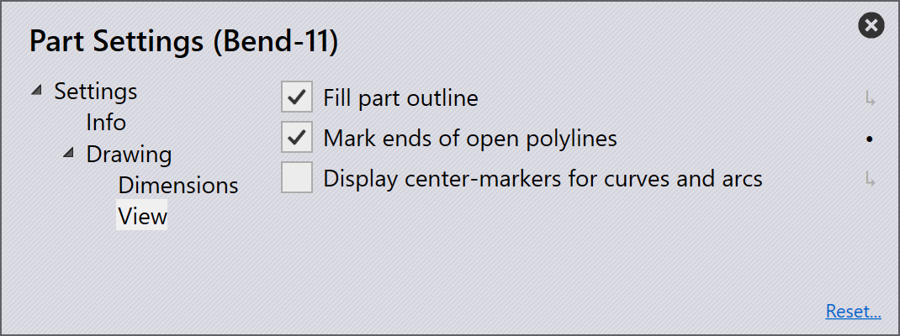
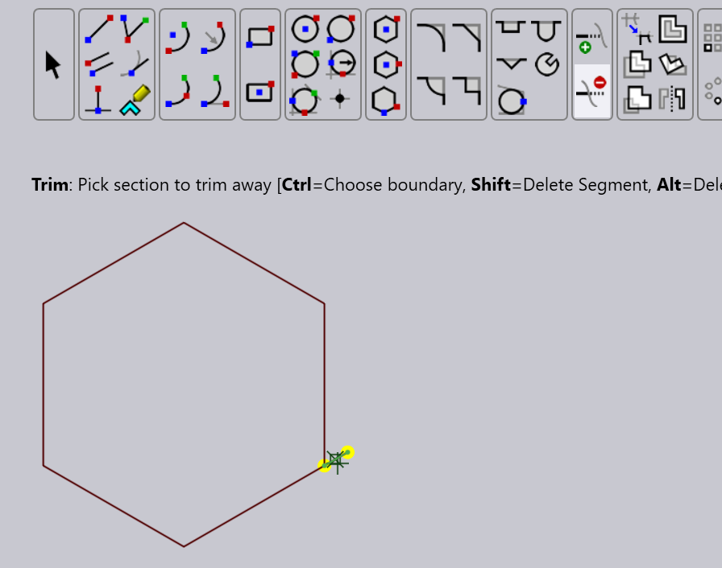
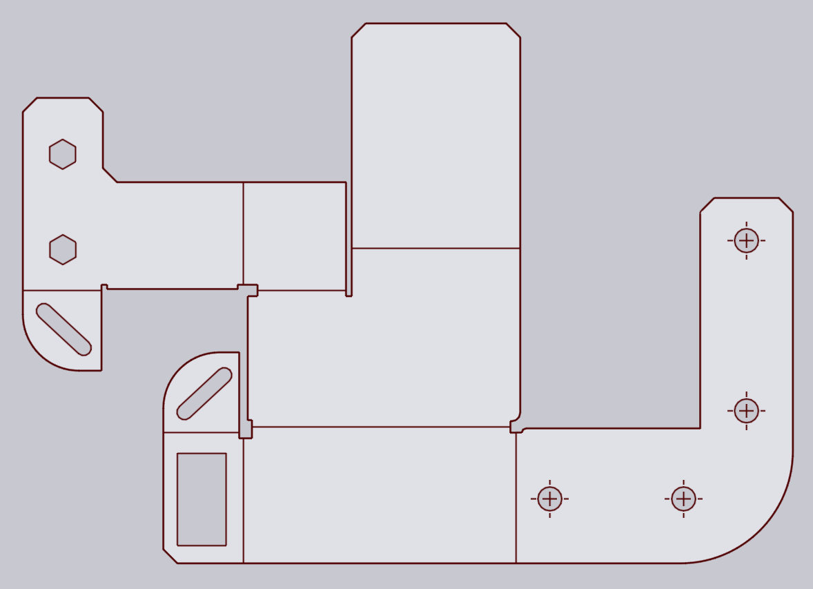
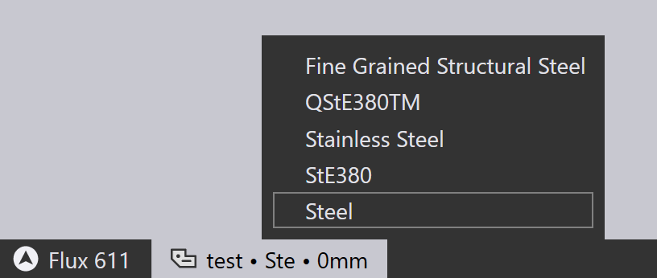
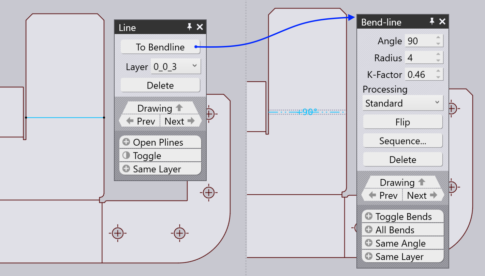
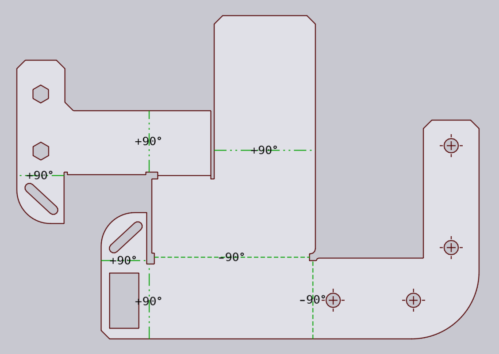
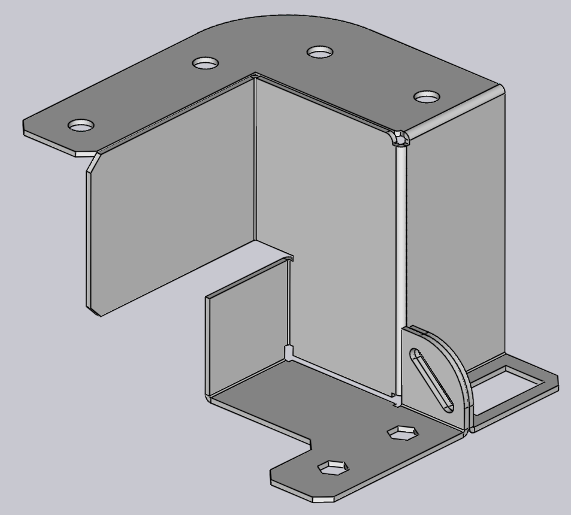

2-D Cleanup
Here is brief walkthrough of how you might clean up an imported DXF drawing and convert it to a sheet-metal drawing that can then be processed further. Assume you start with a DXF that looked like this:

This DXF has a few issues that need fixing:
-
There is a border and a title block.
-
The material and thickness are not specified (you can see that after the import the tab on the bottom of the TecZone window shows None, 0 for the material and thickness).
-
Some of the contours are not closed - there are small overlaps or gaps near some of the corners.
-
There is no bend-line information (the bend lines are drawn as normal lines, but do not contain information about their angle, direction or radius).
1. Remove spurious entities
Draw a rubber-band rectangle around the actual part drawing in the middle (click on one corner, drag to the opposite corner, and release the mouse button). The entities we want to keep are all selected:

Click the Toggle button to select everything else and then press the Delete button on that panel to delete all the unwanted entities like the frame, title block etc.
2. Clean up open contours
To more easily visualize the open ends of contours that are not exactly closed, open the Drawing View Settings[1] and turn on the Mark ends of open polylines setting there.

Yellow markers are drawn at the ends of all the open polylines, make it easy to zoom in and clean them up. To do the Cleanup, switch to the sketch mode by clicking on the Sketch button on the left toolbar (or by using the S key).

Select the Trim command and trim off any overhanging segments that prevent the contours from closing, as shown in the image above. You can also use the Extend command to extend some corners that do not meet, or even use the Line command to draw small lines to close up any gaps.

Once you are done, the drawing should look like the image above - all the areas that are actual sheet-metal are shaded light gray.
3. Set up material
Click on the material name of the part (you can see this on the document tab at the bottom), and type in the material name, or select it from the list of materials. Then, click on the thickness (which is initially set to 0mm, and set up the thickness of the part).

Remember to do this step of setting up material and thickness before defining any bend lines. Both the material and thickness are important for TecZone to set up the bend allowances correctly[2].
4. Add bend information
In this drawing, the bend lines are drawn as simple LINE entities, and contain no bend information. You can add bend-information to these lines by clicking on the line to first open the line inspector panel:

Clicking on the To Bendline button converts the line to a bend-line. You can set up the angle and radius, and change the direction (up / down) of the bend-line by clicking on the Flip button. Repeat this process with all the bend lines until you have a fully annotated drawing as shown below:

5. Fold to 3D
Now, you can press the 3 key to fold this into a 3D model using the material thickness and bend-lines that you have defined:

If the result does not look correct, press 2 to return to the drawing, adjust the bend-lines, and try again.